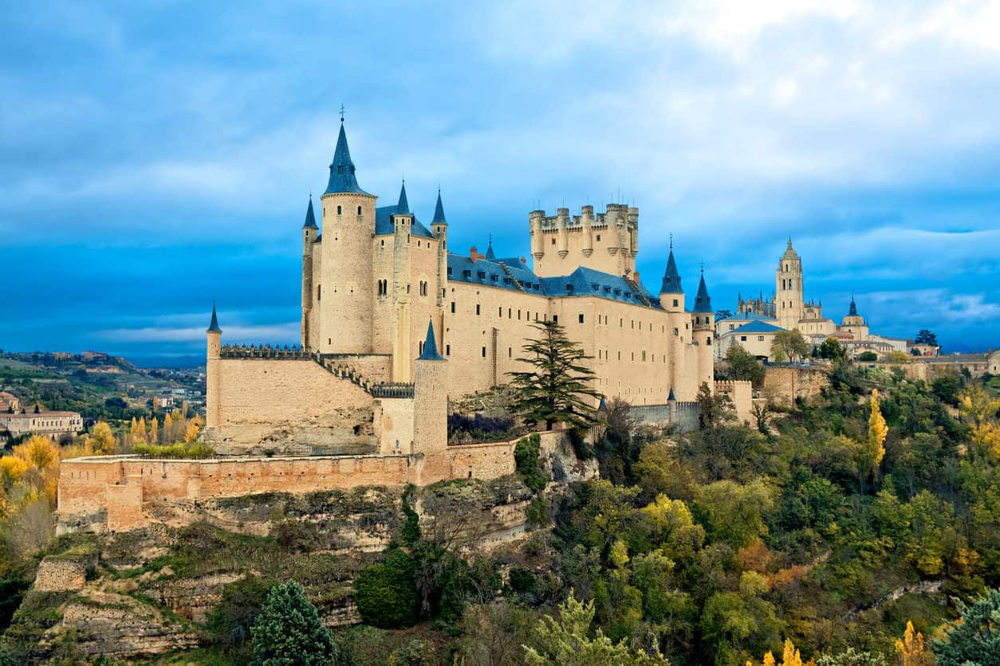
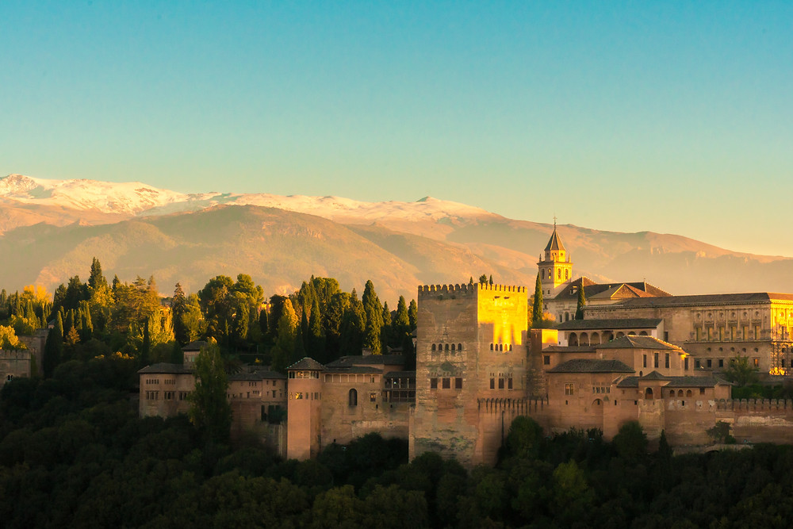

Spain is always the best
This site near the Mosque Cathedral was first a Visigoth and then a Muslim palace. After Ferdinand II gave it to the Bishop of Cordoba in 1236, it became the Bishop’s Palace. The original structure underwent significant changes from the 15th through the 19th centuries. In 1989, Palacio Episcopal was converted into the Diocesan Fine Arts Museum. Museo Diocesano displays religious artifacts, art and furniture dating back to medieval times.
An extensive expansion was done in 1704 by Lorenzo Fernandez de Iglesias, an important architect of the time, under the auspices of Archbishop Manuel Arias. The work joined together differing architectural styles adorned with pilasters that are located on a broad base. The Main Hall or Salon painted by Antonio Mohedano, consists of four columns, two on each side of a ledge, adorned with two statues of saints. Mohedano was famous for the representations of natural objects such as birds, flowers and fruits. Hence, Juan Agustín Ceán Bermúdez in his Diccionario historico de los mas ilustres profesores de las Bellas Artes de Espana Dictionary of the most illustrious historical faculty of Fine Arts in Spain attributed to him the artistry of the ornamental ceiling elements in the Main Salon and the Prelate Gallery In addition to the frescoed ceiling, there are 70 paintings exalting the Catholic Church. There is a mural of five Apostles by Juan de Zamora..
